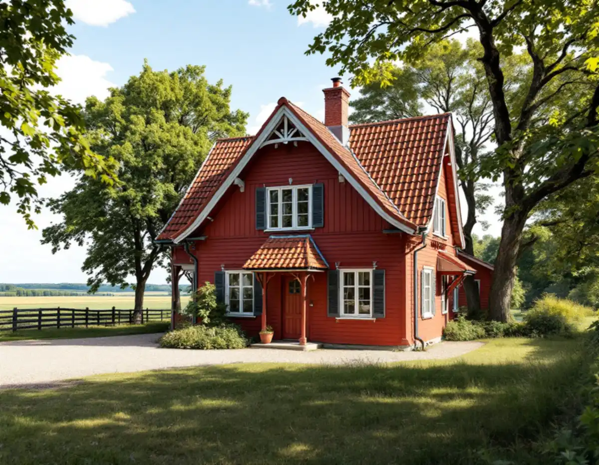
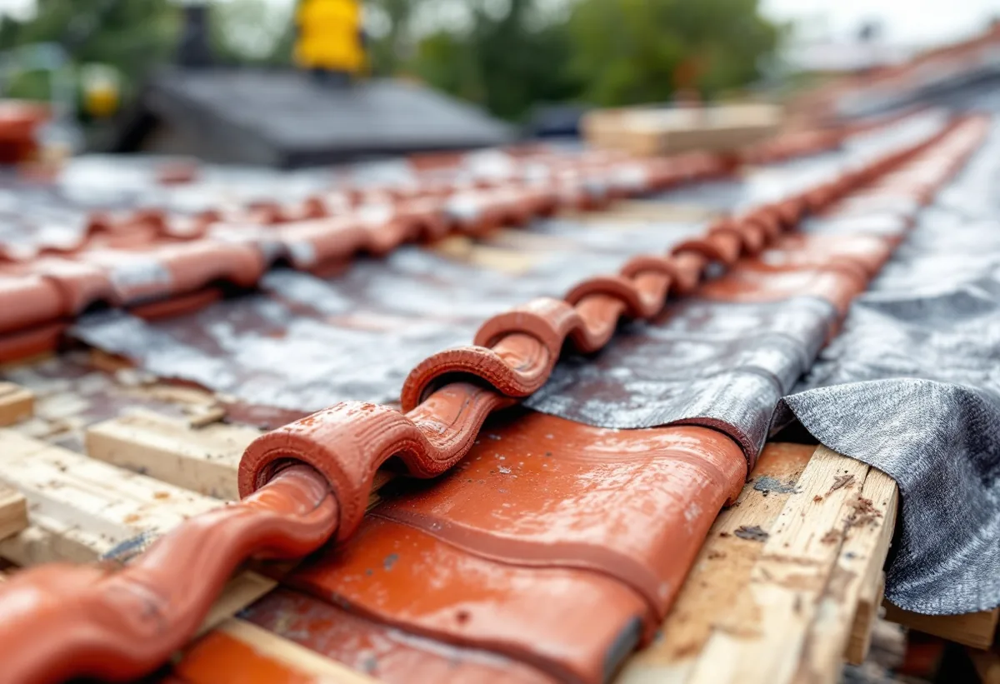
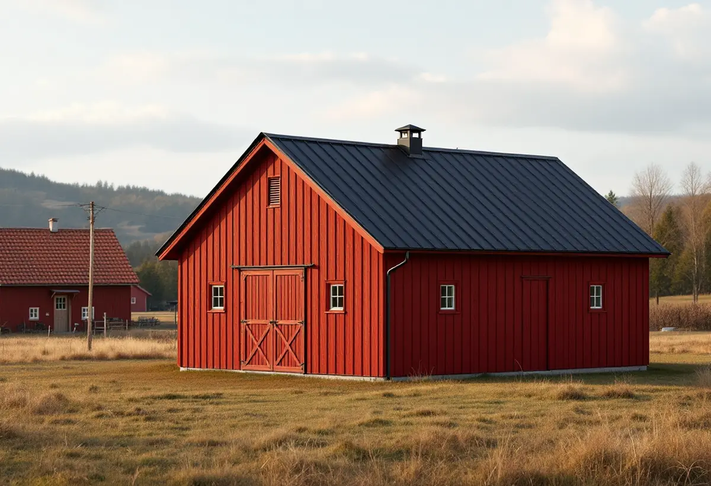

Platsbesök
Tak, underlag, material och husets karaktärsdrag.
Sigtuna kommun har många kulturhistoriskt värdefulla byggnader och områden, och för dem kan även ett takbyte bli ett ärende. Kommunen har samlat vad som gäller för tak på en egen sida med en checklista i fem steg. Geal Entreprenad AB byter tak i hela kommunen och tar fram underlaget när det behövs.

Vill du byta takmaterial, ändra färg på taket eller på annat sätt ändra takets utseende kan du behöva bygglov, skriver kommunen. Det beror på var byggnaden ligger och om den har ett särskilt kulturhistoriskt värde. Bygglov krävs om åtgärden görs vid, inom eller på en byggnad, tomt, ett område eller en allmän plats som är särskilt kulturhistoriskt värdefull, eller i ett område där detaljplan eller områdesbestämmelser har skyddsbestämmelser.
För byggnader med skyddsbestämmelser kan du behöva göra en anmälan även för underhåll av taket, till exempel en omläggning, fast du varken byter färg eller material. Vill du vara säker inför ett materialbyte kan du söka frivilligt bygglov. Är du osäker på om huset ligger i ett värdefullt område tar kommunen emot foton på fastigheten från samtliga väderstreck och återkommer med en bedömning.

Till en ansökan om bygglov för ändring av tak behöver du situationsplan, förslag till kontrollplan och byggnadsritningar. Tomtkartan till situationsplanen laddar du ner som pdf från kommunen, utan inloggning och utan kostnad. På den markerar du tydligt de delar av byggnaden som påverkas.
Kontrollplanen ska visa vilken fastighet det gäller och vem som är byggherre, vad som ska kontrolleras, vem som gör kontrollerna, hur de görs och dokumenteras, när i processen de görs och ha plats för datum och signatur. Enligt kommunen ska ett förslag till kontrollplan lämnas in både vid bygglov och vid anmälan. Ritningarna ska redovisa åtgärden, och berör den bara en del av huset ska hela fasaden eller sektionen visas med de berörda delarna markerade.
I kulturmiljöer ska ändringar göras varsamt, skriver kommunen. Den råder dig att behålla det formspråk, de proportioner och karaktärsdrag som är typiska för byggnaden och tiden, och påpekar att utformningen av tak, fasader, fönster och andra detaljer är viktiga för husets uttryck. Ursprungliga material och detaljer bör bevaras om det går, eller ersättas med samma material om de behöver bytas.
Kommunen pekar ut värdefulla miljöer i bland annat översiktsplanen, kulturminnesvårdsprogrammet, bevarande- och förnyelseplanen för Sigtuna stad och riktlinjerna för Odensala–Hova. Byggnadsminnen och kyrkor finns i Riksantikvarieämbetets bebyggelseregister. Även hus som inte är utpekade kan vara så värdefulla att särskild hänsyn behövs.
Riktlinjerna för dalgången mellan Odensala och Hova, antagna i december 2020, beskriver de äldre husen. Parstugorna har sadeltak, brutna eller obrutna, täckta med lertegel, och sekelskiftesvillorna från omkring 1900 har lertegeltäckta sadeltak som ibland är brutna. Flera gårdar beskrivs med bevarad Falu rödfärgstradition och rött lertaktegel.
För nya hus i dalgången anger riktlinjerna att takbeläggningen bör vara lertegel, och att plåt i så fall ska upplevas matt på avstånd och att svart kulör då ofta är bättre än en klar orange ton. Dokumentet konstaterar också att ny bebyggelse sticker ut genom vita fasader och mörka tak med solpaneler. Riktlinjerna gäller ny bebyggelse, men vid ett takbyte på en äldre gård visar de vad kommunen ser som karaktären. Om taken i kommunen i stort kan du läsa under takrenovering i Sigtuna och takläggare i Sigtuna.

Tak, underlag, material och husets karaktärsdrag.
Detaljplan, skyddsbestämmelser och vid behov kommunens bedömning.
Situationsplan på tomtkartan, ritningar och förslag till kontrollplan.
Rivning, underlag, ytskikt, plåt och ställning står var för sig.
Gammalt tak rivs, underlaget ses över och nytt tak läggs.
Våra kontrollpunkter signeras och taket gås igenom med dig.
Skatteverket räknar byte och reparation av takpannor och hängrännor på ett småhus som rotarbete, liksom att reparera eller byta plåttak och stuprör och att montera och montera ner byggnadsställningar. Arbetet ska göras i eller nära en bostad som du äger och använder som bostad.
Avdraget är högst 30 procent av arbetskostnaden, högst 50 000 kronor per person och år och högst 75 000 kronor tillsammans med rutavdrag. Material och resor ger inget avdrag. Geal drar avdraget direkt på fakturan.
Takets yta och form, valet mellan lertegel, betongpannor och plåt, hur mycket underlag som behöver bytas, plåtdetaljerna och om ett lov med ritningar behövs. Läs mer i vad kostar ett takbyte. Efter ett gratis platsbesök får du ett skriftligt kostnadsförslag.
Byte av tegel-, betong- och plåttak.
Takbyte →Takbyte, takbesiktning och plåtarbeten.
Takläggare i Sigtuna →Sigtuna stad, Märsta och Arlanda.
Takrenovering i Sigtuna →Potten, Arlanda och gårdshusen.
Attefallshus i Sigtuna →Anmälan, fläkt och dusch i stället för badkar.
Badrumsrenovering i Sigtuna →Nytt hus, gästhus och större tomt.
Byggföretag i Sigtuna →Gatufasad, gårdsfasad och uthus i stadskärnan.
Fasadmålning i Sigtuna →Puts i stadskärnan, panel i dalgången.
Fasadrenovering i Sigtuna →Arlanda, ljudisolering och fönster i Sigtuna.
Fönsterbyte i Sigtuna →Bevarandeplanen, gammalt glas och fönsterkulörer.
Fönsterrenovering i Sigtuna →Golv på platta, fuktmätning och radon.
Golvläggare i Sigtuna →Plankgolv i äldre trähus.
Golvslipning i Sigtuna →Ventilation, avlopp och anmälan.
Köksrenovering i Sigtuna →Stadskärnan, Märsta och Rosersberg.
Målare i Sigtuna →Plåttak, rännor och beslag i Sigtuna.
Plåtslagare i Sigtuna →Staket, dörrar och gårdshus i stad och dalgång.
Snickare i Sigtuna →Ny tapet i äldre trähus.
Tapetsering i Sigtuna →Arlanda, uterum och handlingarna.
Tillbyggnad i Sigtuna →Ventilation, VA och kulturmiljö.
Totalrenovering i Sigtuna →